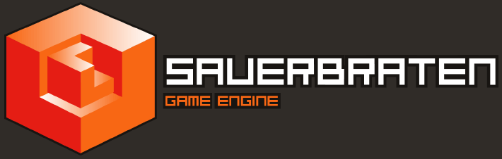

Sauerbraten
Sauerbraten is multiplayer/singleplayer FPS
game freeware game project, and soon an RPG game project. The sourcecode for the engine used in these games is Open Source (ZLIB licence, read the "License" section below carefully before starting ANY kind of project based on this engine).
You will want to read (roughly this order):
-
game: information on gameplay
-
config: how to run the game, configure it for your machine, and extend it with scripts
-
editing tutorial: a guide to making maps
-
editing reference: map making reference
-
history: for seeing latest changes
- Additionally, our wiki has a lot of useful information, you can browse the
static wiki included with this documentation, or the more up to date
wiki on the web. Some
old random documentation bits from our previous wiki that don't have a place yet.
Some notes on the rpg in development.
http://sauerbraten.org/ Sauerbraten
homepage
http://cubeengine.com/ Cube 1 & 2 start
page, forums etc.
http://eisenstern.com/ the RPG homepage
http://quadropolis.us/ user made maps,
FAQs/guides etc
Wouter van Oortmerssen aka Aardappel (wouter at gmx dot net)Current Features
Game features:
-
Oldskool fast & intense gameplay (read: similar to Doom 2 / Quake 1)
- Many multiplayer
gameplay modes, most in teamplay variants as well: deathmatch, instagib, efficiency,
tactics, capture (domination/battlefield style), coop edit (!)
- Masterserver & ingame server browser
- Lag-free gameplay experience
- Two singleplayer modes: DMSP (fight a monster invasion on any DM map), classic SP
(progression driven SP like other games)
- 7 weapons tuned for maximum satisfaction: double barrelled shogun, rocket launcher,
machine gun, rifle, grenade launcher, pistol, fist
Engine features:
- 6 directional heightfield
in octree world structure allowing for instant easy in-game geometry editing (even
in multiplayer, coop edit)
- rendering engine optimized for high geometry throughput,
supporting hardware occlusion culling
- lightmap based lighting with accurate shadows from everything including mapmodels,
smooth lighting for faceted geometry, and fast compiles
- pixel and vertex shader support, each model and world texture can have its own shader
assigned
- robust physics written specifically for this world structure
- loading of md2/md3 models for animated characters, weapons, items, world objects.
- Network library designed for high speed games, client/server network system
- small but complete configuration/scripting language
- simple stereo positional sound system
- particle engine, supporting text particles
- Simplistic menu system, console, etc.
Authors
G a m e & E n g i n e D e s i g n :
- Wouter "Aardappel" van Oortmerssen
P r o g r a m m i n g :
- Wouter "Aardappel" van Oortmerssen : the majority of the code
- Lee "Eihrul" Salzman (Lead Programmer): enet networking library, *nix ports, and a lot of the general code, especially lightmaps/physics related
- Mike "Gilt" Dysart : general programming, especially editing/physics related
Additional code by : Adrian "driAn" Henke (md3 code), Robert Pointon (gui), Jerry Siebe (geometry rendering optimisations),
Julian Mayer (MacOSX port)
L e v e l D e s i g n :
- Kurt "kdoom" Kessler (Lead Level Designer): most dm maps, k_rpg1
- Shane Nieb : nmp*, demomap
- Clarence "sparr" Risher : roughinery and others
- John "metlslime" fitzgibbons : metl*
Additional maps by : Aardappel, driAn, Gilt, voot, shadow, staffy, JCDPC, ZappaZ, RatBoy
A r t :
- MakkE (Lead Artist): mapmodels, hudguns, items
- Dietmar "dcp" Pier : mapmodels, hudguns
- DarthVim : hudguns
- Shane Nieb : hudguns
- Shocktrooper: RPG characters
- Sock (http://www.planetquake.com/simland) : egyptian & tech textures
- Iikka "Fingers" Keranen (www.digital-eel.com/surface) : ikbase & ik2k textures
- Lunaran & Gibbie: normalmapped texture sets
Additional art by: metlslime (textures), Than (textures), Remedy Entertainment Ltd (textures), Seth & Ulrich Galbraith (GPL models), Brian "EvilBastard" Collins / Conrad / Magarnigal / Psionic / James Green / Andreas Möller / Ryan Butts & Jeramy Cooke (md2 models)
S o u n d / M u s i c :
- Marc "Fanatic" A. Pullen : soundtrack
O t h e r :
- Kristian "sleepwalkr" Duske : website / messageboard, hosting, master server.
- Pushplay : documentation help
- The SDL team (www.libsdl.org) for their libraries
License
The Sauerbraten game is freeware, you may freely distribute the
Sauerbraten archive/installer unmodified on any media. You may re-compress using different archival formats suitable for your OS (i.e. zip/tgz/rpm/deb/dmg), any changes beyond that require my explicit permission.
You may play Sauerbraten for any purpose as long as you
don't blame me for any damages incurred.
If you want to produce new content with the sauerbraten engine, you have to be aware
that the source code may be Open Source, but the game and the media it consist of
have their individual licenses and copyrights. This means that you have roughly
3 options:
-
You may produce new content for the sauerbraten game, for example as a "custom map" (.ogz/.cfg/textures etc). Contributing to the original game is most welcome,
and the most productive way of working with sauerbraten.
-
If you want to create your own gameplay beyond what you can do with a map, the best
way to do this is as a "mod" (same as above, but with new executable that
incorporates your gameplay), that requires an existing install of sauerbraten,
and installs only the new files you created in parallel to the existing files.
-
If you insist on making a standalone game based on sauerbraten, do realize that
only the sourcecode
is
yours to use freely (if you abide by the ZLIB license, see below), not the media.
You CANNOT simply redistribute the entire sauerbraten package with your modified
files, as the majority of game media is not yours to use freely (it is made by many
authors with a variety of licences and copyright restrictions). Unless you have
explicit permission from the authors, or the readme says explicitly "may be used
for any purpose" or similar language, it will be illegal to include in your standalone
game based on the sauerbraten engine (you may not assume that just because a file
has no explicit license, that it is free of copyright). Therefore, if you wish to produce a standalone
game, be prepared to make many of the maps, models, textures, sounds etc from scratch
yourself.
In this sense sauerbraten is similar to games like Quake (its code is Open Source,
but its media is not), it is a game that is meant
to be added to, not copied and used as a template. Sauerbraten is not meant to be a quick game
creation kit, it is a game.
If you wish to use the Sauerbraten
source code (ZLIB license) in any way, read the src/readme_source.txt file carefully.